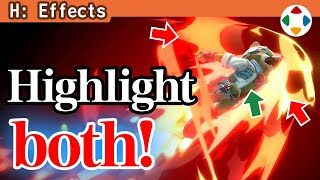
速览
为了做出冲击力有一定不得已，但角色被特效埋住看不清的情况相当常见。2D 游戏简单：把角色显示优先级设得比特效高就行，外观上也没大问题。但在 3D 空间，尤其不是俯视的作品，无论如何都会被特效埋住。3D 游戏也能改变绘制顺序，即强行优先显示角色，但多数情况像视差出错一样，印象不太好。《大乱斗》也为此苦恼，但在能做到的范围内下了功夫——这没被埋住吧。例如力量灌篮打地面时，即使被皇冠特效填满，通过绘制方式斗士也清晰可见；例如隼龙拳，本来被特效填满的地方也能看到一定程度。看舞台中央那圈的内侧山峰：内侧和外侧的高度不同，这样就不会挡住中央的角色——这在 3D 游戏中也能用吧。最终技等特效通常会埋得一塌糊涂，但并没有。另外让角色显眼的方法还有描边等概念。概念上这些不在工具里实际摆弄可能有点难懂。
1. 被特效埋住 0:04
为了做出冲击力有一定不得已，但角色被特效埋住看不清的情况相当常见。
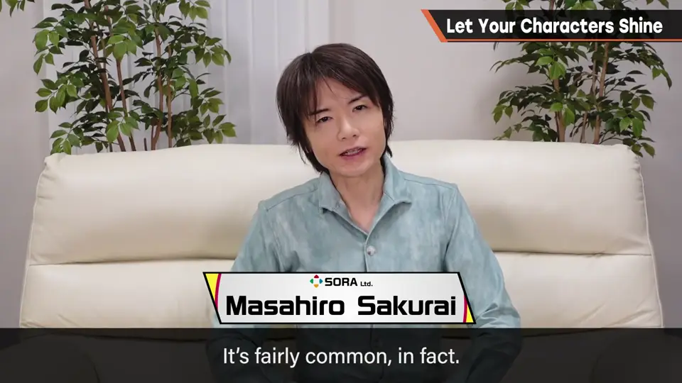
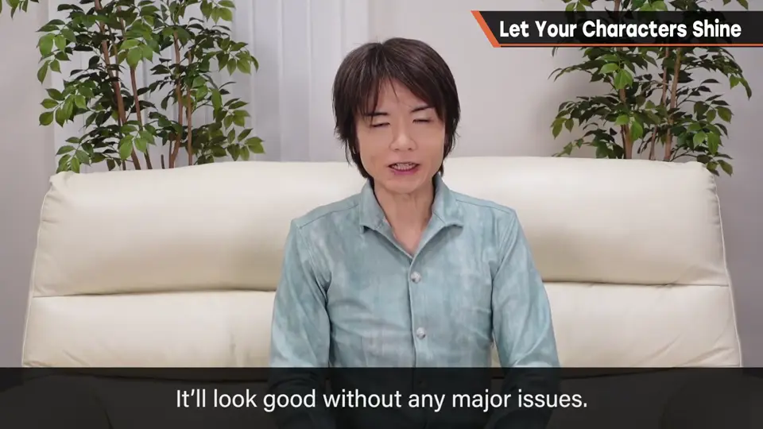
2D 游戏简单：把角色显示优先级设得比特效高就行，外观上也没大问题。
但在 3D 空间，尤其不是俯视的作品，无论如何都会被特效埋住。
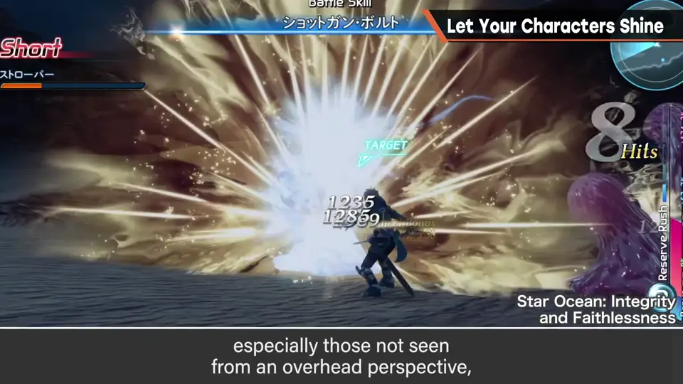
2. 强行优先的代价 0:33
3D 游戏也能改变绘制顺序、强行优先显示角色。
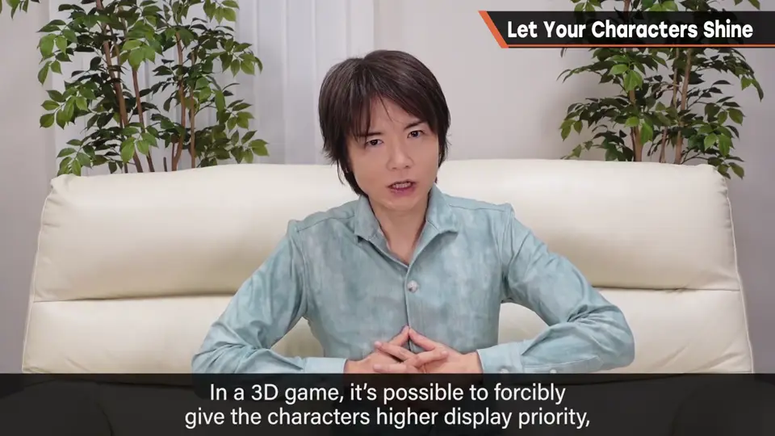
3. 《大乱斗》的功夫 0:46
《大乱斗》也为此苦恼，但在能做到的范围内下了功夫——这没被埋住吧。
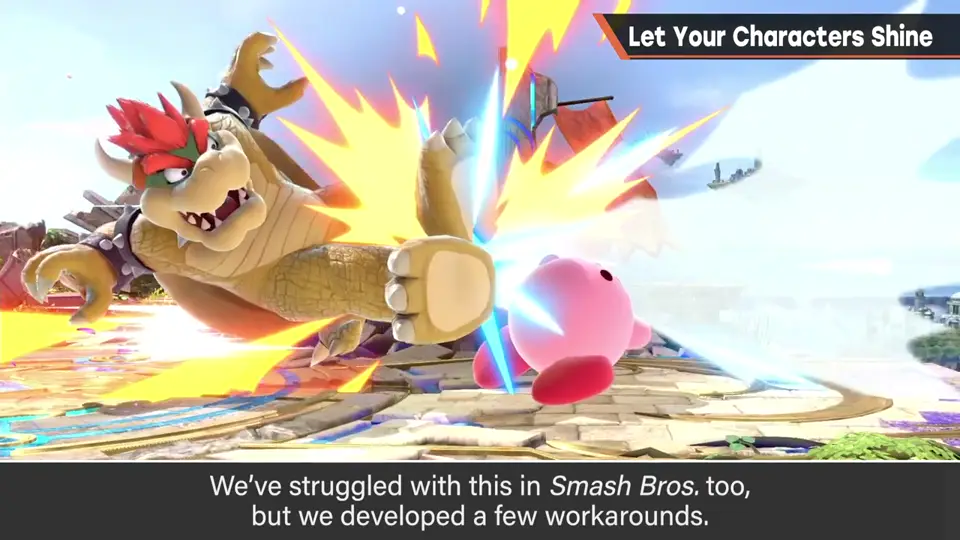
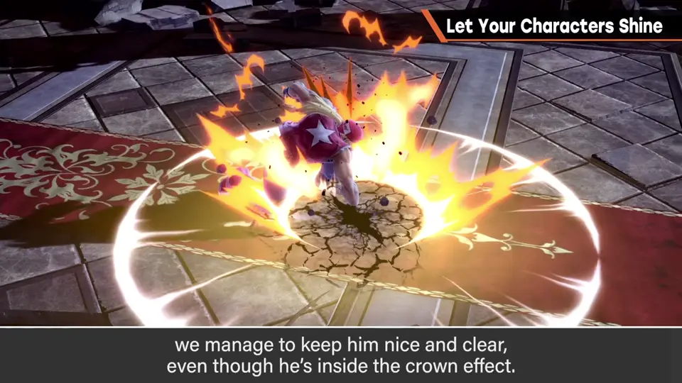
例如力量灌篮打地面时，即使被皇冠特效填满，通过绘制方式斗士也清晰可见。
例如隼龙拳：本来被特效填满的地方，也能看到一定程度。
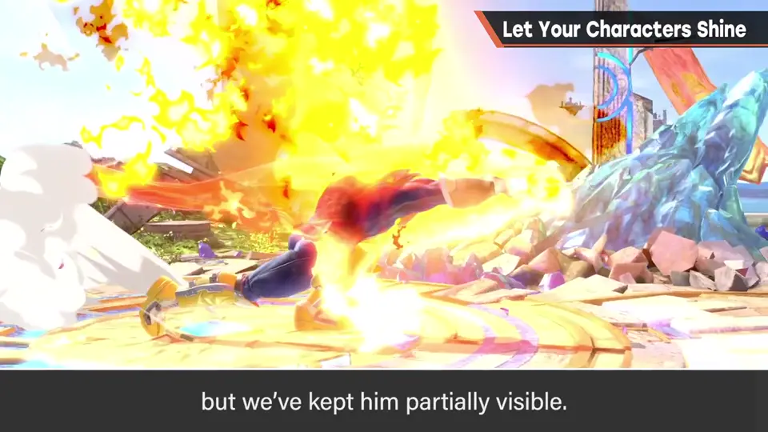
4. 内外高度不同 1:20
看舞台中央那圈特效的山峰：内侧和外侧高度不同，这样就不会挡住中央的角色。
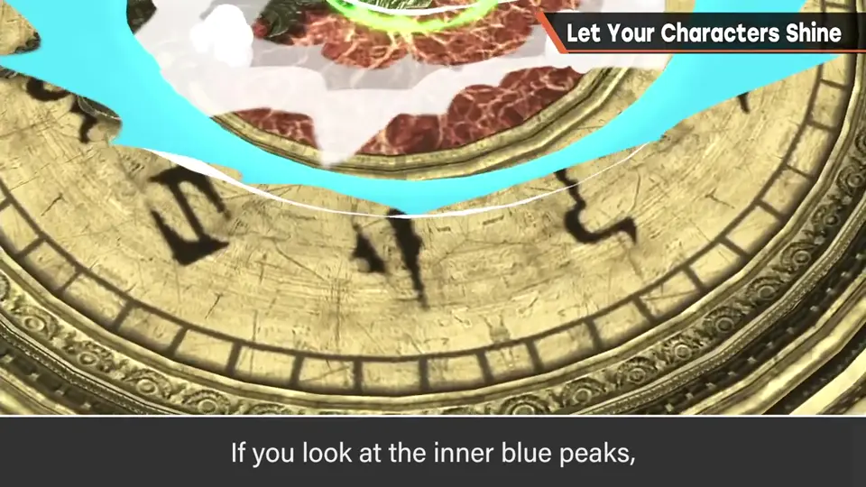
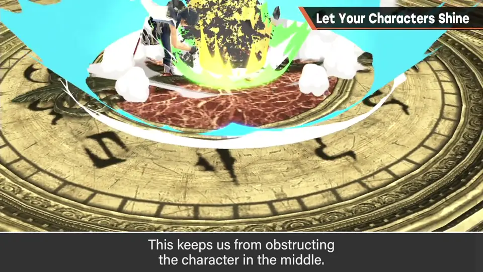
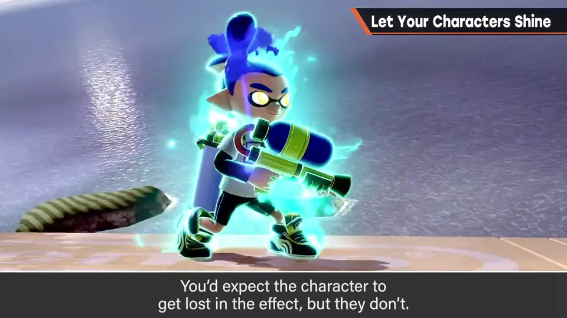
最终技等特效通常会把角色埋得一塌糊涂，但这里并没有。
5. 描边 1:44
另外让角色显眼的方法还有描边等概念。
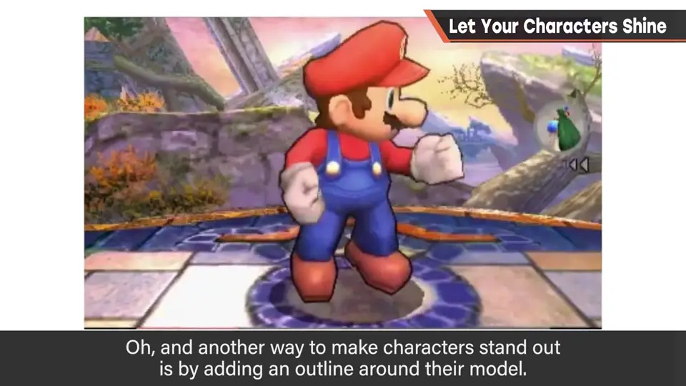
概念上，这些不在工具里实际摆弄可能有点难懂。
自测题
1. 2D 和 3D 游戏处理特效遮挡有何不同？
2D 提高角色显示优先级即可；3D 强行优先会像视差出错，印象不好。 0:35
2. 舞台中央特效的「内外高度不同」有什么作用？
内侧更低，不会挡住中央的角色。 1:28
3. 除了改特效形状，还有什么让角色显眼的方法？
给角色模型描边。 1:46